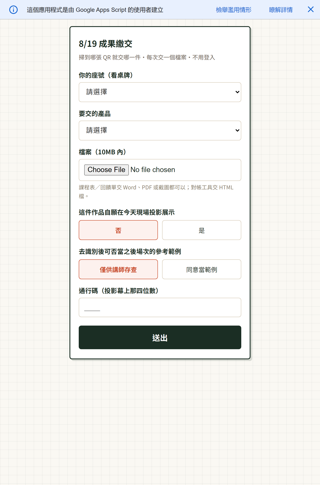
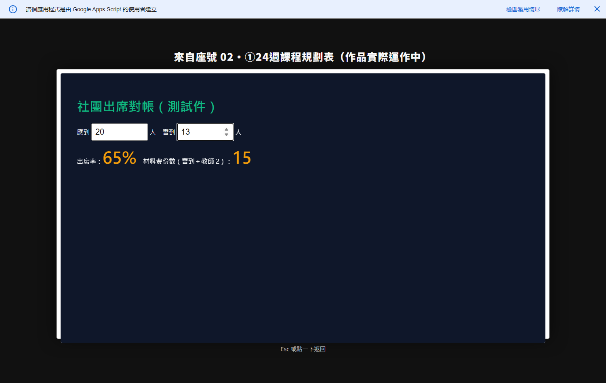

示範
這三個東西都是課堂教的方法做出來的
A 管理台可以直接操作；B 交件頁可從按鈕或 QR code 開啟，但連到 Google Apps Script，必須有網路；C 展示牆因為需要講師金鑰，這裡只提供實際畫面截圖。每個示範下方都有「做出這東西的三段提示詞」。
這台換成社團尺寸，就是你期末要交的那套：名單、出席、材料費份數，都在同一個地方。
這是怎麼做出來的
我要做一個研習／社團的管理台，單一 HTML 檔、離線可用、資料存在瀏覽器裡。 請先不要寫程式，先幫我想清楚規格： 要有哪幾個畫面、每個畫面哪些欄位、出席率和材料費份數怎麼算。 材料費份數的定義是「當次出席學生數 ＋ 授課教師 2 人」。 最後寫成一段我可以整段轉貼給另一個 AI 的規格。 請把規格用下面這兩行框起來，中間不要夾雜別的話，我才知道要複製哪一段： ===規格開始=== （規格內容） ===規格結束===
- 要什麼
- 一份畫面與欄位的規格
- AI 大概會回什麼
- 三到四個畫面的清單、欄位表、兩個算式
- 你要檢查什麼
- 材料費份數的算式有沒有含「＋2 位老師」
請照下面的規格做出單一檔案的 HTML 管理台，不連網、離線可開。 另外請做兩件事： 1. 加一顆「載入練習用範例」，裡面放 14 筆虛構姓名，不要用真名 2. 深色底（頁面底 #0f172a、卡片 #1e293b、主文字 #f8fafc、主色 #10b981），字不要小於 16px 做完告訴我檔案在哪個路徑。 ⟨把第 1 步那兩條框線中間的內容整段貼在這裡，框線本身不用貼⟩
- 要什麼
- 一個真的能點、能輸入、能算的檔案
- AI 大概會回什麼
- 一個 .html 檔（我們實測是 1,540 行）＋路徑
- 你要檢查什麼
- 按鈕按得動、文字看得見、關掉再開資料還在
這是剛做好的管理台（路徑：⟨貼上路徑⟩）。請逐條檢查並列清單，不要幫我改： 1. 每一顆按鈕按下去是否真的有反應、對話框關掉後頁面是否還點得動 2. 有沒有任何文字的顏色跟背景一樣、看不見 3. 出席率與材料費份數的算式是否符合官方定義 4. 有沒有任何真實姓名或個資
- 要什麼
- 一張「哪裡不對」的清單
- AI 大概會回什麼
- 逐條缺漏，通常抓到 3 到 10 項
- 你要檢查什麼
- 它有沒有真的打開你的檔案
⚠ 我們自己撞到的兩件事（點開看）
這兩個都是我們自己在驗收時抓到的。寫出來比講一百句「要驗收」有用。
① 對話框開一次之後，全頁點不動
對話框關掉了，但它上面那層看不見的遮罩沒有一起收掉，整頁被蓋住。畫面看起來完全正常，只是什麼都按不動。
怎麼抓：每個對話框都開一次、關一次，然後隨手點一顆別的按鈕。
② 按鈕白底白字，整顆消失
按鈕在深色底上變成白底白字，文字整個看不見，只剩一塊白色方塊。
怎麼抓：把畫面上每一顆按鈕、每一行小字唸出來。唸不出來的就是壞了。
✓ 這台跑過的 93 項檢查（點開看）
管理台在交出來之前，逐條跑過 93 項驗收，分成七組。你自己的工具不用做到 93 項，但這七組值得照著問一遍。
| 組別 | 項數 | 在檢查什麼 |
|---|---|---|
| 畫面與顏色 | 18 | 每一行字都看得見、每顆按鈕都認得出來、深色底下對比夠 |
| 按鈕與對話框 | 15 | 每顆按得動、對話框關掉後頁面還能操作 |
| 資料進出 | 14 | 新增、修改、刪除、關掉再開資料還在、匯出檔案打得開 |
| 算式 | 12 | 出席率、材料費份數、七個百分比，跟官方定義逐條對 |
| 個資 | 11 | 沒有真實姓名、練習範例是虛構的、匯出檔不夾帶 |
| 鍵盤與近用 | 13 | 不用滑鼠走得完、焦點框看得見、點擊區夠大 |
| 手機與投影 | 10 | 手機開得起來、投影時最後一排看得到 |
合計 93 項。這份清單本身也是請 AI 產的（第 3 步），我們再逐條手動確認。


這一段需要網路。離線開教材時仍可看左側截圖與下方說明，但不能開啟交件頁或上傳檔案。
左邊是交件頁的實際畫面，右邊的 QR 掃了直接開（示範用的那一支，收到的檔案進拋棄式資料夾）。 免登入、不用有帳號：選座號 → 選檔案 → 輸入通行碼 → 送出。通行碼當天投影在螢幕上。 收到的檔案進講師自己的雲端硬碟，學生彼此看不到、也看不到資料夾本身。
為什麼這裡不是直接嵌在頁面上？Google 的 Apps Script 預設不准別的網站把它嵌進來（防止有人拿它做釣魚頁）。 我們沒有為了好看去放寬那個設定——現場本來就是掃 QR，這樣才是真實用法。
學生要做的事（免登入，不用有帳號）：
掃 QR → 選座號 → 選檔案（照片／Word／PDF／HTML 都收，10MB 內）→ 勾「可以公開展示」→ 輸入通行碼 → 送出。
教材要講的三件事
① 為什麼不用 Google 表單
學校帳號開的表單預設「僅限校內」，校外的人會被擋在登入畫面（畫面上寫 401，意思是「沒權限」）。自己寫的收件頁可以設成「任何人」都交得進來。
② 檔案進誰的雲端
進你自己的 Google 雲端硬碟。學生彼此看不到別人交的，也不需要他們有帳號。
③ 三個常數要改什麼
把程式最上面三行換成你自己的：資料夾 ID（檔案要收去哪）、通行碼（給學生的那組）、展示金鑰（只有你知道，用來打開展示牆）。
我要一個學生交作品的網頁，用 Google Apps Script 做，學生免登入。 請先不要寫程式，先幫我想清楚：要收哪些欄位、檔案大小與格式怎麼限制、 「可以公開展示」這個同意選項要怎麼存、通行碼怎麼驗。 寫成一段我可以整段轉貼給另一個 AI 的規格。
- 要什麼
- 收件頁的欄位與規則
- AI 大概會回什麼
- 欄位清單、限制條件、同意欄位的存法
- 你要檢查什麼
- 有沒有把「同意公開展示」單獨存成一個欄位
請照規格寫成 Google Apps Script（含 doGet 與交件表單畫面），部署成「任何人」都能開的網頁。 最上面請留三個常數讓我改：資料夾 ID、通行碼、展示金鑰。 單檔上限 10MB，收照片／Word／PDF／HTML。 做完告訴我要在哪裡貼這段程式、怎麼部署。 ⟨把第 1 步那兩條框線中間的內容整段貼在這裡，框線本身不用貼⟩
- 要什麼
- 可以部署的 Apps Script 程式碼與部署步驟
- AI 大概會回什麼
- 一段程式碼＋「貼到 script.google.com、按部署」的步驟
- 你要檢查什麼
- 用手機（不登入學校帳號）開一次，交一張照片試試
這是剛做好的收件頁程式碼（整段貼在下面）。請逐條列出風險，不要幫我改： 1. 沒有通行碼的人能不能交或看到別人的檔案 2. 沒有勾「可以公開展示」的作品，會不會在展示牆被點開 3. 超過 10MB 或奇怪的檔案格式會怎樣 4. 有沒有把學生的個資寫進網址或記錄裡 ⟨貼上程式碼⟩
- 要什麼
- 一張安全與個資的風險清單
- AI 大概會回什麼
- 逐條風險與該補的檢查
- 你要檢查什麼
- 它指出的每一條，自己動手試一次

展示牆要用講師專屬金鑰才打得開——把金鑰放在公開網頁上，等於任何人都能看到全班作品。所以這裡只放畫面，實際操作在 8/19 現場示範。
你會看到：座號 × 產品的完成磁貼，頂端「① m/14 ② n/14 ③ p/14」的大字統計。投在教室螢幕上，誰交了、誰還沒交，一眼就看得完。
關鍵設計（這幾點要跟學生講清楚）
沒勾的作品只亮完成狀態，點不開。這是尊重，也是個資紅線：交作業是義務，被公開展示不是。
這裡提供的是展示牆截圖；現場開啟作品後，可以當場輸入資料、當場算出出席率。你在教室做的東西，會在螢幕上真的動起來。
照片直接投影；PDF 走預覽；Word 這類會提示「請在講師機下載打開」。
期末成果發表會、家長日、校內成果展，都是這一頁。
同一支 Apps Script 我要再加一個老師端的展示牆畫面，投影用。 請先幫我想清楚規格：座號 × 產品的格子怎麼排、頂端要顯示哪些統計數字、 哪些作品可以被點開放大（只有作者勾了「可以公開展示」的才可以）、 沒有展示金鑰的人打開會看到什麼。
- 要什麼
- 展示牆的版面與權限規則
- AI 大概會回什麼
- 格子矩陣的排法、統計欄位、兩種權限狀態
- 你要檢查什麼
- 「沒勾同意就點不開」有沒有寫進規格
請在同一支 Apps Script 裡加上展示牆畫面，需要展示金鑰才進得去。 投影用，所以統計數字請用很大的字（至少 40px），深色底、格子邊框清楚。 照片直接顯示、PDF 走預覽、其他格式顯示「請在講師機下載打開」。 沒有勾「可以公開展示」的作品只亮完成狀態，不能點開。 ⟨把第 1 步那兩條框線中間的內容整段貼在這裡，框線本身不用貼⟩
- 要什麼
- 能投影的展示牆畫面
- AI 大概會回什麼
- 加在同一支程式裡的另一段程式碼
- 你要檢查什麼
- 投到螢幕上，從教室最後一排看得到數字嗎
這是展示牆的程式碼（整段貼在下面）。請逐條列出，不要幫我改： 1. 有沒有任何路徑能讓沒勾同意的作品被點開或被下載 2. 沒有展示金鑰的人能看到什麼 3. 統計數字的算法是否正確（分母是名單人數還是交件人數） ⟨貼上程式碼⟩
- 要什麼
- 權限與算法的檢查清單
- AI 大概會回什麼
- 逐條問題，常會抓到分母算錯
- 你要檢查什麼
- 拿一個沒勾同意的作品，自己試著點開
要什麼 → 給 AI 的話 → AI 大概會回什麼 → 你要檢查什麼。每一關的提示詞卡都是這個格式，你自己寫新的提示詞時也照這四格想一遍就好。